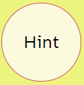
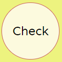
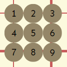
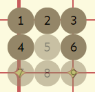
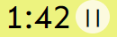
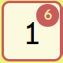
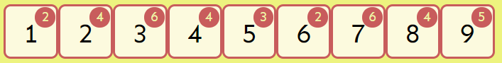
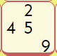

HINT-button! A number will appear in blue!

Check-button! Check if your choosen numbers are correct. If not, the background of the numbers will appear in red otherwise the numerbs will turn green. If you are finished with the game, click on „Check“ to see if you succeeded!

In the default setting you are given all numbers (1-9) to choose from, make the selection for a cell. If you click on this button, you switch on the help mode:

"help-mode": You get a preselection of possible numbers you can only use in this row, column and square. Click on this button and you come back to the default setting. You can switch between this two modes as often you want.

It shows your used time and on the right is the pause button to take a break!

Default setting: On the bottom you see the numbers 1-9, when you move your mouse over them, all identical numbers will be highlighted in yellow on the field. In the red circle all previous displayed numbers are summed. Click on this button and you are in the "make-notes-mode".


„make-notes-mode“: You can only do this before playing! Click on a cell, than click on a number on the bottom and you can insert numbers into a cell. Double click on a cell and you can insert your solution number. Click again on this button you come back to the default setting.